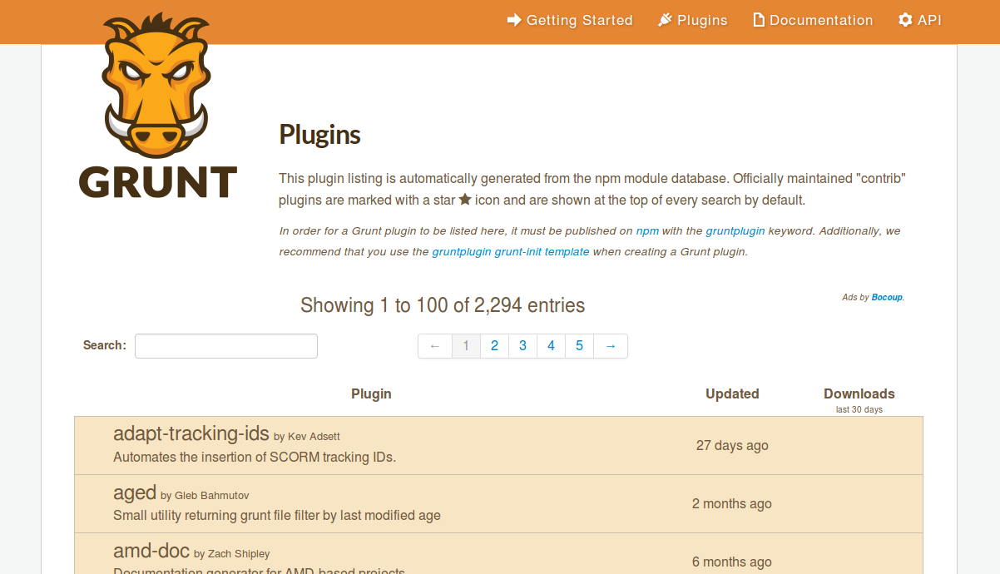

Symfony et Grunt
Accélérer son développement

Symfony
- JavaScript
- Cascading Style Sheets
- Assetic
Structure dans symfony
app
Ressource
public
coffee
images
lessJavaScript WTF?
Coffeescript
- Pas de point virgule
- Indentation définit les blocs
- Définition et appels de fonction simplifiés
- En forme d'expression
- Manipulation de tableau simplifiée
- Boucle for "logique"
Less
- Utilisation de variables
- Création de mixins
- Définition de règles imbriquées (héritage)
- Création de fonctions
- Mise en place d’opérations "complexes"
- Altération des couleurs
Utilisation de variables
// size
@headerSize: 40px;
@defaultRadius: 5px;
// color : http://pltts.me/palettes/148712
@color1: #FF9900;
@color2: #424242;
@color3: #E9E9E9;
@color4: #BCBCBC;
@color5: #3299BB;
@writeColor: @color5;
@flashColor: @color1;
@backgroundColor: @color3;
@highlightBackgroundColor: @color4;Création de mixins
.border-box {
-moz-box-sizing: border-box;
-webkit-box-sizing: border-box;
box-sizing: border-box;
}
* {
.border-box;
}Définition de règles imbriquées (héritage)
header {
height: @headerSize;
background-color: @highlightBackgroundColor;
.border-radius();
h1 {
height: @headerSize;
line-height: @headerSize;
display: inline-block;
}
.remove-album {
color: @red;
form {
display: none;
}
}
}Création de fonctions
.box-sizing (@box-sizing) {
-moz-box-sizing: @box-sizing;
-webkit-box-sizing: @box-sizing;
box-sizing: @box-sizing;
}
.border-box {
.box-sizing (border-box);
}
Grunt
- Créer des tâches automatisées en JavaScript :
- Création de symlink
- Concaténation de fichier
- Compilation de fichier CoffeeScript
- Compilation de fichier less
- Minification de fichier JavaScript
- Minification de fichier CSS
- Lancement d'un serveur PHP
- Lancement d'un proxy livereload
- ...
Tout un écosystème

Configuration de NPM
- package.json
-
{ "name": "symfony2-with-grunt", "version": "0.3.0", "author": "Simon C. <symfony2-with-grunt@fafaru.com>", "description": "a presentation of grunt with symfony", "scripts": { "postinstall": "bower install", }, "repository": { "type": "git", "url": "https://github.com/kosssi/symfony2-with-grunt.git" }, "dependencies" : { "bower" : "*", "livereloadx" : "0.1.x", "grunt" : "0.2.x", "grunt-php" : "0.1.x", }, "license": "MIT" }
Configuration de Grunt
- Gruntfile.js
Création de symlink
grunt.loadNpmTasks('grunt-contrib-symlink');
grunt.initConfig({
symlink: {
// app/Resources/public/ doit être disponible via web/bundles/app/
app: {
src: 'app/Resources/public/',
dest: 'web/bundles/app'
},
dropzone_image: {
src: 'bower_components/dropzone/downloads/images/spritemap.png',
dest: 'web/images/spritemap.png'
},
fontawesome_font: {
src: 'bower_components/font-awesome/fonts/',
dest: 'web/fonts'
}
}
});
grunt.registerTask('init', ['symlink', 'default']);Concaténation de fichier
grunt.loadNpmTasks('grunt-contrib-concat');
grunt.initConfig({
concat: {
js: {
src: [
'web/built/bower.js',
'web/built/*/js/*.js',
'web/built/*/js/*/*.js'
],
dest: 'web/built/all.js'
},
css: {
src: [
'web/built/bower.css',
'web/built/*/css/*.css',
'web/built/*/css/*/*.css'
],
dest: 'web/built/all.css'
}
},
});Minification de fichier JavaScript
grunt.loadNpmTasks('grunt-contrib-uglify');
grunt.initConfig({
uglify: {
dist: {
files: {
'web/built/all.min.js': ['web/built/all.js']
}
}
}
});CoffeeScript
grunt.loadNpmTasks('grunt-contrib-coffee');
grunt.initConfig({
coffee: {
compileBare: {
options: {
bare: true
},
files: filesCoffee
}
},
});
grunt.registerTask('javascript', ['coffee:discovering', 'coffee', 'concat:js', 'uglify']);
grunt.registerTask('coffee:discovering', 'This is a function', function() {
// COFFEE Files management
// Source COFFEE files are located inside : bundles/[bundle]/coffee/
// Destination JS files are located inside : built/[bundle]/js/
var mappingFileCoffee = grunt.file.expandMapping(
['*/coffee/*.coffee', '*/coffee/*/*.coffee'],
'web/built/', {
cwd: 'web/bundles/',
rename: function(dest, matchedSrcPath, options) {
return dest + matchedSrcPath.replace(/coffee/g, 'js');
}
});
grunt.util._.each(mappingFileCoffee, function(value) {
// Why value.src is an array ??
filesCoffee[value.dest] = value.src[0];
});
});

Livereload
Rechargement de page automatique après un changement
Installation :
- En ajoutant un js + plugin navigateur
- ou mieux...
- en passant par serveur proxy
Installation
npm install --save livereloadxConfiguration
grunt.loadNpmTasks('livereloadx');
grunt.initConfig({
livereloadx: {
port: 8000,
proxy: "http://localhost:35729/",
dir: 'web/built'
}
});